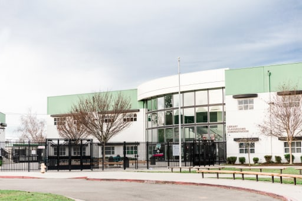

Jay Saleh
Birth
August 12th 2000 - Stockton, CA
My mother birthed her second child (me) on August 12th, 2000 at 4:44 PM at Dameron Hospital in Stockton, California. I don't rememeber the journey but apparently I almost died. Shortly after, I traveled 16 miles north to my new crib. Above is a picture of me with all my new drip.
Brother's Ballpit Party
December 6th 2001 - Stockton, CA
As you can see from the picture above, I was having a blast.
First Zoo Trip
June 2002 - Lodi, CA
This was my first trip to Mickie Grove Park, a local park with a zoo. I was terrified of animals before this day, but I really liked the parrots they had. From this day foward, my parents would take me to the zoo pretty often.
Introduction to the Computer
Febuary 2006 - Lodi, CA
This was my family's first computer, the eMachine T3985. I loved this thing. I remember spending long nights playing computer games. Around this time I also started school at first grade. I missed preschool, kindgarden, and part of first grade as I was out of the country.
Lakewood Elementary School
February 2006 - May 2012 - Lodi, CA
This is where I went to Elementary School. I spent 2006 - 2011 here. As mentioned previously, I started school at 1st grade
so the majority of my time here was spent catching up. I'll take the next few slides to introduce my town/schools.
Shoutout to
Mr. McKilligan, you're a real one.
Millswood Middle School
August 2012 - May 2014 - Lodi, CA 
This is where I went to Middle School. I don't remember much from this time period so we'll just move on.
Lodi High School
August 2014 - May 2018 - Lodi, CA
This is my High School. I would say about 80% of my memories come from this place. I made a lot of freinds here through several activities such as cross country, track and field, rocketry club, the 3D printing lab, and Science Olympiad. As much as I hated this place while I was there, I miss the memories I made with my friends before we all went our own respective paths.
High School Graduation
May 31st 2018 - Stockton, CA
These are some of my closest friends in High School. It was a very nostalgic day. I miss the boys.
First Day of College
Septemeber 21st 2018 - Stanford, CA

I started school on Septemeber 21st 2018. Going into college I was premed. After taking CS106B (Programing Abstractions), I found the content very enagaging and decided to switch majors to Computer Science. College was very intimiating at first with everyone saying it would be extremely diffcult. Looking back to my first day, I would tell myself to take it easy.
First Day at Google
June 15th 2020 - Lodi, CA

I'm super exicted to learn and grow at Google this summer!